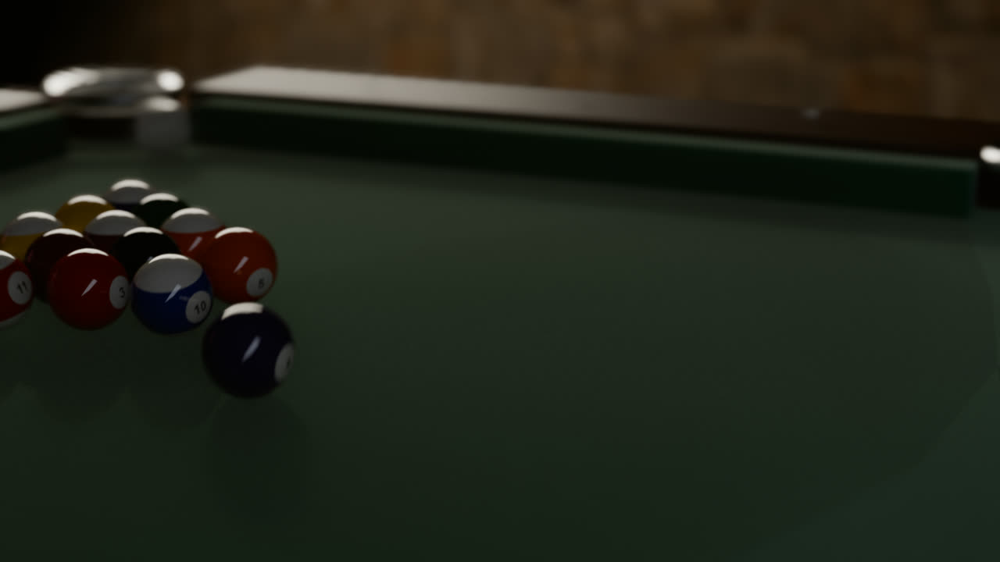
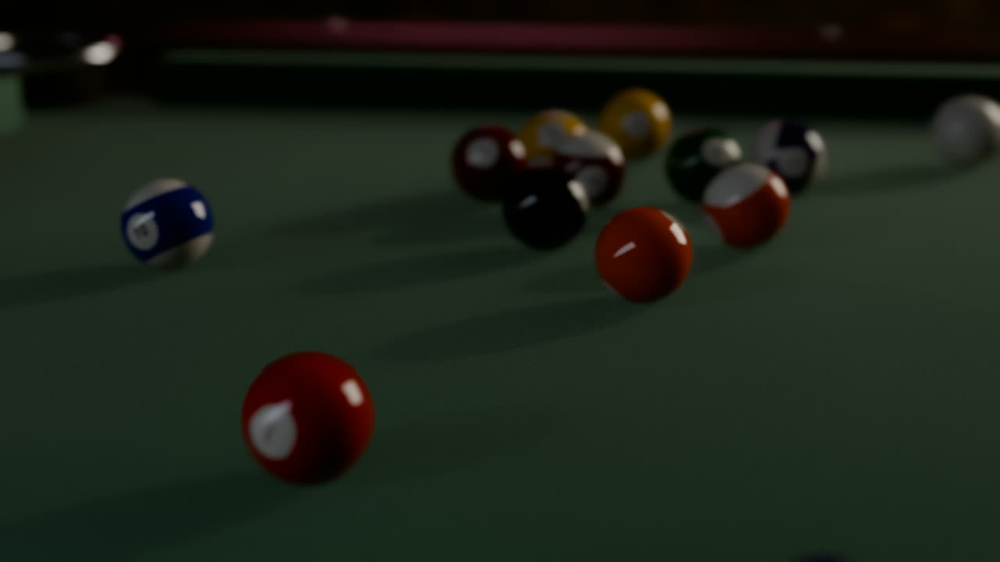
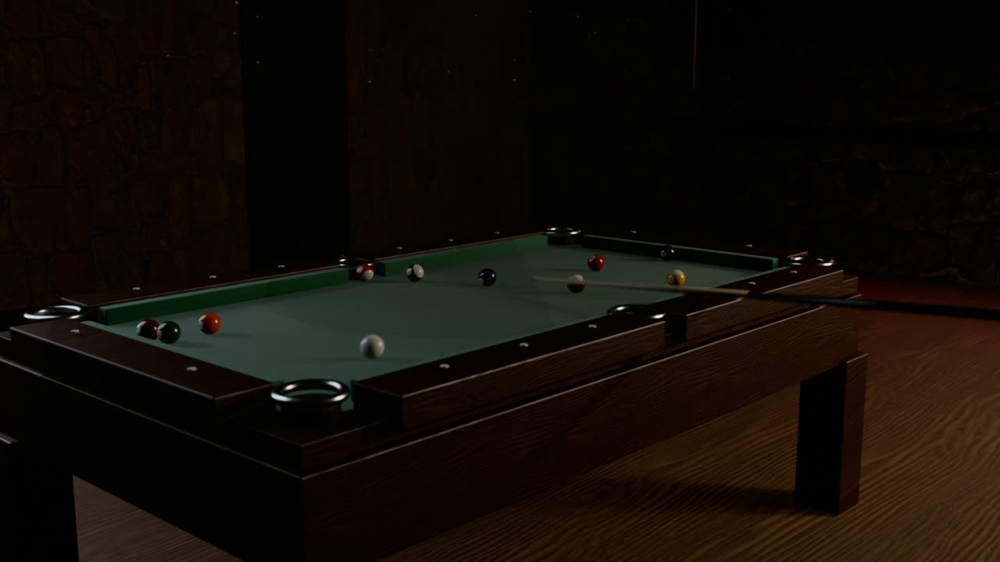
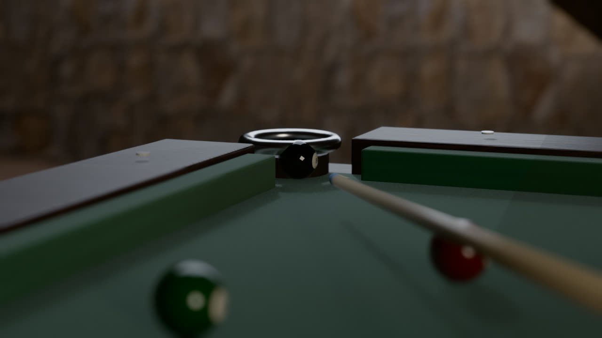
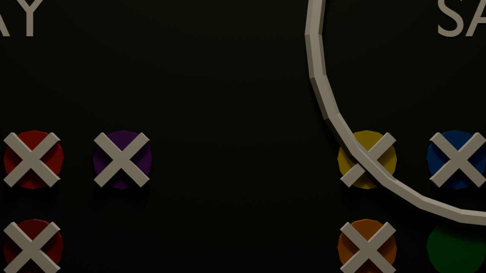

Two moderate-skill AI players. One complete game of 8-ball. Every collision, cushion and roll simulated with real billiards physics (pooltool), then rendered as a film in Blender — in a dive bar that never existed.





| # | PLAYER | SHOT | RESULT |
|---|
Physics first. simulate_game.py plays the game with pooltool's event-based solver — momentum-conserving impacts, sliding→rolling friction, cushion physics, spin. The players are skill models: aim wander that grows with distance, speed misjudgement, unintentional english. Scratches give ball-in-hand; an 8 potted on the break re-spots (house rule).
Then the take is frozen. The whole game — every ball's position and
roll orientation at 60 Hz — is exported to game.json. The film
always renders from this exact take, so the physics can't drift between renders.
Then the film. render_game.py rebuilds the table in Blender
to the simulator's exact playfield geometry (the rendered cushions sit on the
physics lines), dresses the bar around it, and runs the camera program:
chalkboard intro, overhead break, the 1 kHz bullet-time orbit, pocket cams with
a live tally, per-shot handheld coverage, and the final heartbreak hold.
No sound — this is a visual test.
Full pipeline + docs on GitHub · physics by pooltool · textures ambientCG (CC0)